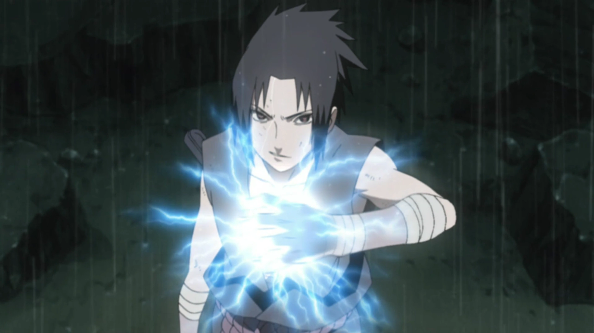
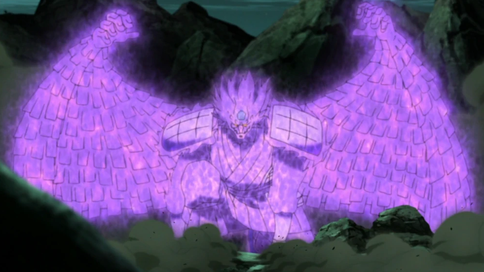
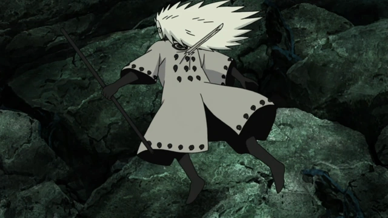

Sasuke Uchiha (うちはサスケ, Uchiha Sasuke) is one of the last surviving members of Konohagakure's Uchiha clan and a reincarnation of Indra Ōtsutsuki. After his older brother, Itachi, slaughtered their clan, Sasuke made it his mission in life to avenge them by killing Itachi. He is added to Team 7 upon becoming a Shinobi, and, through competition with his rival and best friend, Naruto Uzumaki, Sasuke starts developing his skills but eventually grows dissatisfied with his progress. He defects from Konoha so that he can acquire the strength needed to exact his revenge and master the Cursed Seal of Heaven. His years of seeking vengeance and the actions that followed became increasingly demanding, irrational, and isolated from others, leading him to be branded as an international criminal. After learning the truth of his brother's sacrifice, later proving instrumental in ending the Fourth Shinobi World War, and being happily redeemed by Naruto, Sasuke decides to return to Konoha and dedicate his life to help protect the village and its inhabitants, becoming referred to as the "Supporting Kage" (支う影, Sasaukage, literally meaning: Supporting Shadow).
1. Chidori

The Chidori was created by Kakashi Hatake after he failed to apply his lightning-nature to the Rasengan. To perform, the user first gathers lightning to their hand; the high concentration of electricity produces a sound reminiscent of many birds chirping, hence the name. Once the chakra is gathered, users charge at their target and thrust the Chidori into them, piercing them and typically causing fatal damage. Despite the sound it makes, the rapid speed at which it's used makes it useful for assassinations. The technique makes the users move at their target so fast that its causes a tunnel vision-like effect for them. Because they charge in a straight line it is easy for opponents to attack them. However, a user of the Sharingan can overcome these drawbacks due to its heightened visual perception preventing the tunnel vision from occurring.
2. Susanoo

Like all Susanoo, Sasuke's has two swords at its disposal that it can use against larger targets or to easily destroy nearby structures. More commonly, his Susanoo employs a bow that can fire arrows at rapid speeds and, when needed, double as a shield. The arrows can be fashioned from the same chakra as Susanoo itself, Amaterasu's flames or, channelling the tailed beasts' chakra, or lightning. From lightning, Sasuke can use his strongest attack, Indra's Arrow.
3. Amaterasu

Sasuke Uchiha's ability to use Amaterasu is one of his most powerful Mangekyō Sharingan techniques, granting him the power to produce inextinguishable black flames that burn anything in his line of sight. After awakening his Mangekyō Sharingan, Sasuke learned to manipulate Amaterasu with remarkable precision, unlike its original form used by his brother Itachi. He could control the shape, direction, and intensity of the flames, even combining them with his Blaze Release (Enton) to create weapons or enhance his attacks. This mastery allowed Sasuke to defend, attack, and strategize with deadly versatility, making Amaterasu not just a raw power technique, but a refined and adaptive weapon that reflected his intelligence and growth as a shinobi.
4. Amenotejikara

Using his left eye, Sasuke can shift himself between spaces, causing anything currently occupying the space he targets to swap places with him. By shifting to another space during combat, Sasuke can avoid his opponent's techniques in an instant, and by swapping places with a weapon, such as his sword, he can leave behind a trap for an approaching enemy. He can also use it transport other people, which he can use to catch powerful foes like Madara off guard.
For more information about Sasuke Uchiha:
Click Here